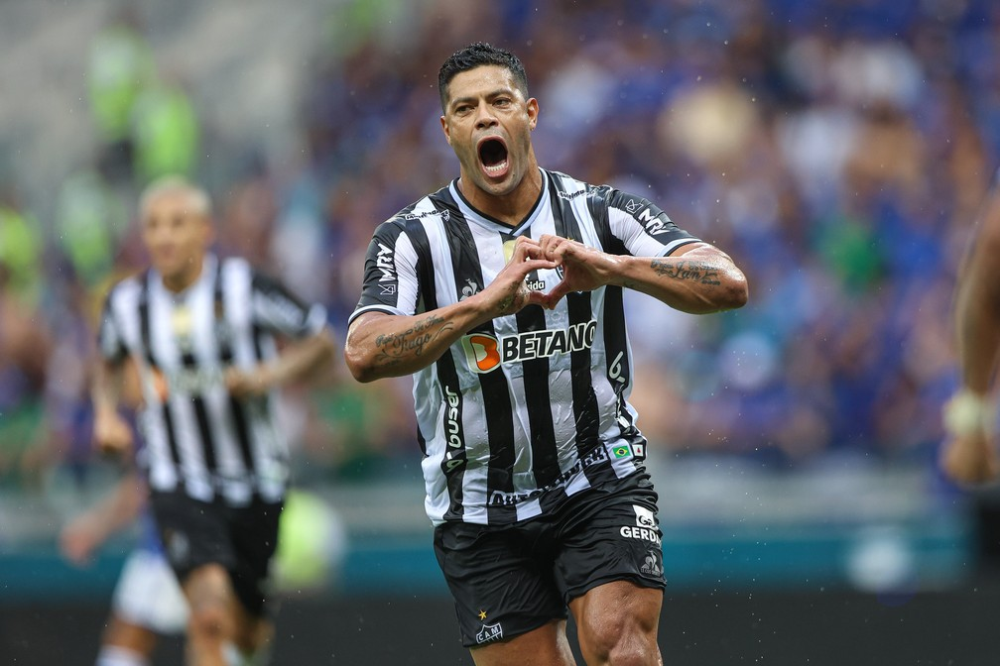

Atacante do Galo tem mais gols oficiais por clubes do que o atual gestor do rival Cruzeiro
Ao contrário do que foi a caminhada de Hulk na edição 2021, a Libertadores deste ano chega ao atacante já com o status de ídolo do Atlético-MG. São cinco títulos, artilharia atrás de artilharia e uma marca histórica superada: mais gols oficiais por clubes do que Ronaldo Fenômeno. O Galo estreia na Libertadores nesta quarta, na Colômbia, contra o Deportes Tolima.
O ícone do futebol mundial foi testemunha ocular da superação de seu histórico. Afinal, como gestor da SAF do Cruzeiro, esteve no camarote do Mineirão na final do Campeonato Mineiro. Vitória de 3 a 1 do Atlético, com dois gols de Hulk, que soma 353 gols por clubes em jogos oficiais, contra 352 gols do lendário camisa 9. Ronaldo fez 62 gols pela Seleção Brasileira, e tem 414 gols totais.
Ao fim do clássico, com a medalha de campeão mineiro, além dos troféus de melhor jogador da final e artilheiro do torneio, Hulk foi se encontrar com Ronaldo no corredor de acesso aos vestiários. Registrou o momento no Instagram, com a legenda: "Ídolo, respeito máximo".
Idolatria que Hulk agora tem na torcida do Atlético. Já está no patamar de comparação com Reinaldo e Ronaldinho Gaúcho, jogadores imortais pelos lances, gols e títulos. Agora, ele irá atrás do título que lhe falta com a camisa do Galo, justamente a Libertadores que fez R10 chegar ao panteão alvinegro.
Em 2021, Hulk se firmou mesmo como titular do Atlético justamente nos jogos da fase de grupos da Libertadores. Ao EE, ele lembrou que chegou a ser reserva nos primeiros clássicos contra América-MG e Cruzeiro. Ingrenou e desandou a fazer gols no torneio continental. Foram 7 gols e 3 assistências em 11 jogos na edição passada, quando ajudou o Galo a ser semifinalista.
- Espero continuar escrevendo muitas histórias, para quem sabe daqui 10, 30, 50 anos poder vir assistir o jogo do Galo e poder ser abraçado como é o Reinaldo hoje, o Éder, o Dadá Maravilha. Você ver isso é muito gratificante. Então o que eu puder fazer para estar na história deste clube eu vou fazer - disse o jogador.